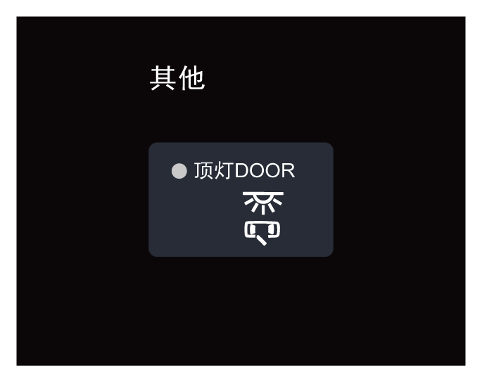

–整车电源在“ON”挡位，通过音响系统菜单栏 进入驾控面板界面，向左滑动，点击“顶灯DOOR”软按键，打开车顶照明灯自动开启功能；再次点击该软按键，关闭车顶照明灯自动开启功能。
进入驾控面板界面，向左滑动，点击“顶灯DOOR”软按键，打开车顶照明灯自动开启功能；再次点击该软按键，关闭车顶照明灯自动开启功能。
前排照明
车顶照明灯自动开启功能

车内灯延时关闭功能
车顶照明灯均熄灭时，在车顶照明灯自动开启功能开启的条件下：
–整车电源在“OFF”挡位时，打开任一车门，车顶照明灯自动点亮；关闭车门约30s后熄灭。
–整车电源在“OFF”挡位时，遥控解锁车门，车顶照明灯自动点亮，约30s后熄灭。
–整车电源从“ON”挡位切换至“OFF”挡位时，车顶照明灯自动点亮，约30s后熄灭。
提示+
所有车门关闭，车顶照明灯通过上述条件点亮期间，遥控闭锁或将整车电源切换至“ON”挡位，车顶照明灯自动熄灭。
车顶照明灯

–车顶照明灯熄灭时，按开关①，对应侧的车顶照明灯点亮；再次按开关①，对应侧的车顶照明灯熄灭。
— 页面到底了 —